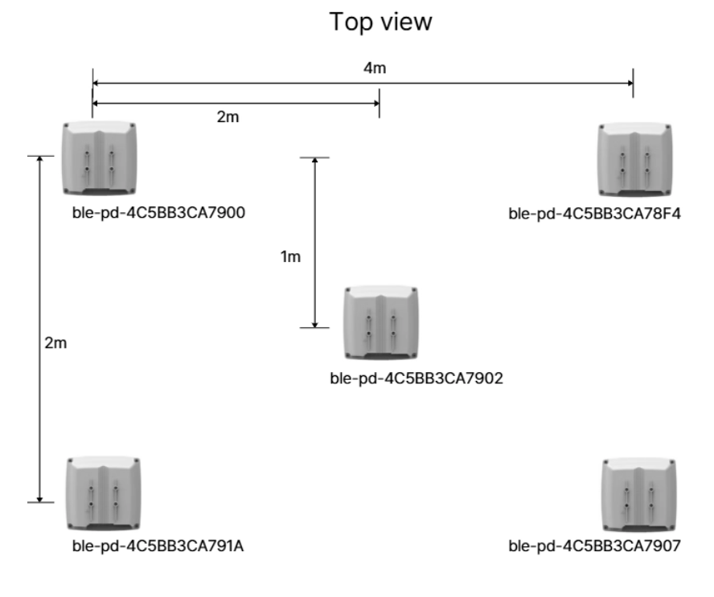
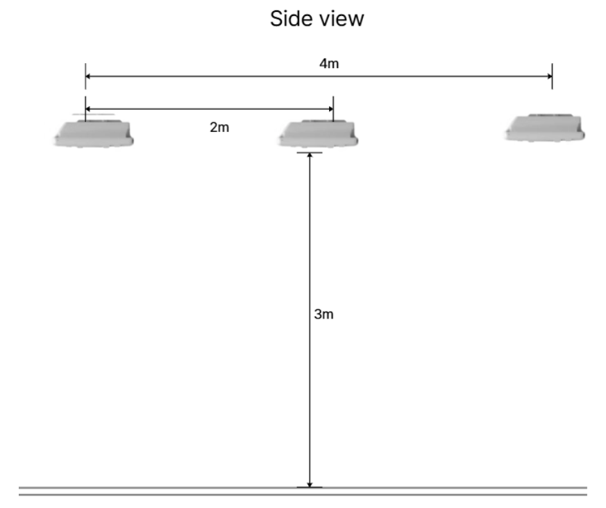
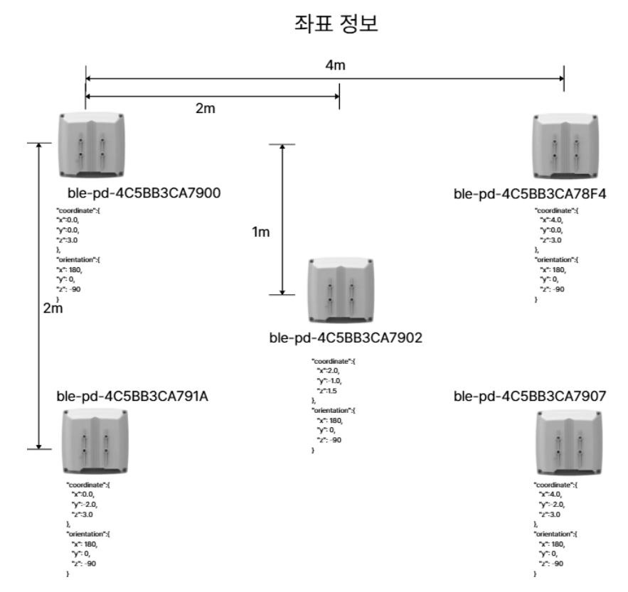

1System Configuration
System Diagram
Locators receive the BLE signal from tags, the MQTT server computes positions via the PoE switching hub, and a PC handles configuration and monitoring.

Hardware Components
- Network router
- Position server card — Raspberry Pi, hostname
aoa-server-1(MQTT broker + position engine) - PoE switching hub
- LocationX locator
CB-AOAAOD-L-POE2601(4×4 URA antenna) - BLE tags
CB-AOAAOD-Tag-Hart/CB-AOAAOD-Tag-Motion

Software
| Software | Purpose | Notes |
|---|---|---|
| LocationX Install & Verify Tool | Device discovery · locator placement on a floor plan · pushing settings to the server · verifying data reception | Required (Windows) — GitHub |
| MQTT Explorer | Monitoring raw MQTT messages | Optional — mqtt-explorer.com |
Network Layout
| Component | IP address | Port |
|---|---|---|
| Router admin page | 192.168.0.1 (typical default) | - |
| Position server card (MQTT broker) | DHCP assigned — find it with [Discover Devices] in the setting tool | 1883 |
| Locators | DHCP (automatic) | - |
2Installation — Initial Setup
Setup Order
- Start the router — the admin page is at
192.168.0.1for a typical router - Start the position server (MQTT server) — it runs automatically once the server card is powered on
- Connect the locators — plug them into the PoE switching hub with LAN cables
Locator Installation (Initial Setup)
For the initial setup, install the locators as shown below and verify operation. Mount the locators on the ceiling (recommended height: about 3 m) with the antenna face pointing toward the floor.



3Setup & Verification — LocationX Install & Verify Tool
A Windows application to discover, place and calibrate the devices (setup) and to confirm that positions and
angles come out correctly (verification). It has three top tabs — [Settings] [AOD mode (positioning)]
[AOA mode (direction)] — each with a left-hand menu.
Download it from GitHub Releases
(executable locationx_install_tool_vX.Y.Z.exe).

3-1. Discover devices — Settings › ① Locator
- Click [Locator search (UDP)]; the server card and locators on the same network appear in the list.
- LED identification, restart, reboot and software update per card are on the same screen.
3-2. Floor plan and locator placement — Settings › ③ Position
- Load floor plan → scale calibration (two points of known distance) → set the origin.
- Drag locators from the left list onto the canvas at their real positions and enter height (z) and orientation. Set the orientation so that the angle lines in AOD mode point at the real tag.
- Adjust the estimation mode (2D/3D), fixed tag height, angle-spike rejection and filtering in the global settings on the right.
- Switch [Top | 3D]; the 3D rotate edit mode lets you set orientation visually.

3-3. Send to server
- [Send to server] shows the diff, applies it to the server card and restarts the position engine.
- Floor plans and placements are saved per site and floor automatically; you can also keep a project file (
.lxpos.json).
3-4. Check positions — AOD mode (positioning)
In LAN, connect to the server card's broker to see tag positions on the floor plan in 2D/3D, together with per-locator angle lines and coverage. Choose which tags to show with the tag list on the right. Remote shows positions and device status relayed to an external broker.

3-5. Check direction — AOA mode (direction)
Pick one locator to see the tag direction (azimuth, elevation) as a 0–360° dial, a 3D view and scrolling charts — useful for checking mounting orientation and diagnosing reflections or jitter.

3-6. Tag management — Settings › ② Tag
- Tag scan, status read, transmit interval (ms) for low-power operation, and over-the-air firmware update
- Connection path: PC Bluetooth or a locator (an installed locator connects on your behalf — the PC need not be near the tag)
Locator status web page
- Antenna reception, CPU temperature, broker connection and angle charts per locator at
http://<card IP>:8080
4Verifying MQTT Data (MQTT Explorer)
Use MQTT Explorer when you want to inspect the raw MQTT messages directly.
- Launch MQTT Explorer and click +Connections to set up an MQTT connection.
- Name:
aoa-server-1 - Protocol:
mqtt:// - Host:
<server card IP>(found via Locator search in the Install & Verify Tool) - Port:
1883
- Name:
- Open ADVANCED, set the topic to
controlbit/#, and go back with BACK. - Click CONNECT to connect to the MQTT broker.
- You can confirm data is being received, including the azimuth and elevation values.
Received Data Fields
| Field | Description |
|---|---|
azimuth | Azimuth (horizontal angle) of the tag signal relative to the locator (antenna array) |
azimuth_stdev | Standard deviation of the azimuth measurement |
elevation | Elevation (vertical angle) of the tag signal |
elevation_stdev | Standard deviation of the elevation measurement |
# Angle (locator → broker · elevation 0–90° from the board plane) controlbit/aoa/angle/<locator_id>/<tag_id> { "azimuth": 42.1, "azimuth_stdev": 1.3, "elevation": 55.6, "elevation_stdev": 2.0 } # Position (position engine → broker · in meters) controlbit/aoa/position/<positioning_id>/<tag_id> { "x": 2.41, "x_stdev": 0.12, "y": -1.02, "y_stdev": 0.10, "z": 0.0, "z_stdev": 0.01 }